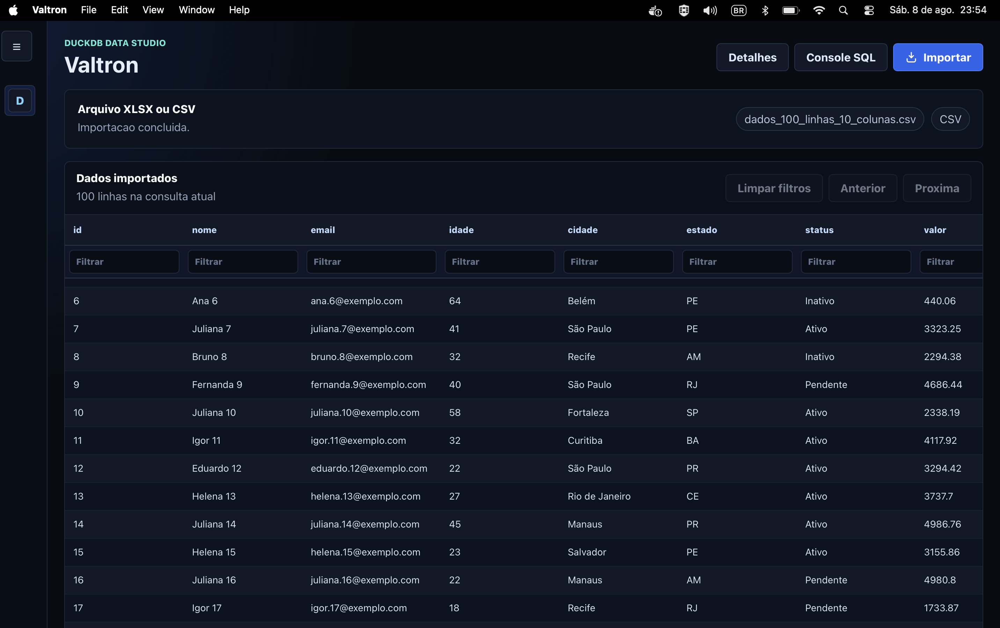

Importacao local
Abre arquivos XLSX, XLSM e CSV pelo seletor nativo e registra cada importacao como documento independente.
Desktop local-first
Um mini data studio baseado em DuckDB para importar, consultar, validar e explorar arquivos Excel e CSV sem depender de nuvem.

O que o projeto resolve
O Valtron foi desenhado para ingerir arquivos grandes com rapidez, persistir documentos localmente e manter a navegacao responsiva com paginacao, filtros, ordenacao e SQL somente leitura.
Abre arquivos XLSX, XLSM e CSV pelo seletor nativo e registra cada importacao como documento independente.
Usa grid paginada, filtros por coluna e ordenacao para navegar por bases grandes sem carregar tudo na tela.
Exibe estatisticas de linhas, colunas, celulas vazias e incidencia de vazios por coluna.
Permite consultar os documentos importados com comandos seguros como SELECT, WITH, SHOW, DESCRIBE e EXPLAIN.
Mantem os dados em um banco analitico local, sem upload para servicos externos.
Combina frontend TypeScript com backend Rust para acesso nativo a arquivos e processamento local.
Tecnologia
Empacotamento desktop e ponte nativa.
Importacao, persistencia e consultas.
Motor analitico local embutido.
Interface e estado do frontend.
Servidor de desenvolvimento e build web.
Interface

Observacao sobre GitHub Pages:
Esta pagina e estatica e serve para apresentar o projeto. O app desktop completo depende do Tauri, Rust e DuckDB local, por isso nao roda diretamente dentro do navegador no GitHub Pages.